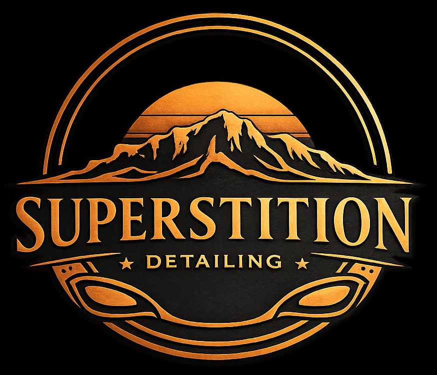

Trunk-to-Front Service
Cargo areas, floorboards, vents, and exterior paint — meticulously cleaned from back bumper to front grille. Nothing gets skipped.

High-precision detailing that comes to your driveway — trunk to front, every inch, no corners cut.
Superstition Detailing specializes in mobile, high-precision cleaning that covers every inch of your car, truck, or SUV. We use professional-grade products and proven techniques to restore your vehicle's beauty — right at your doorstep, anywhere in Mesa and nearby areas.
"A detailer that doesn't cut corners."
Cargo areas, floorboards, vents, and exterior paint — meticulously cleaned from back bumper to front grille. Nothing gets skipped.
We bring the full setup to your home or office. Book an appointment that fits your schedule, not the other way around.
Superior results using water-efficient methods that are safe for your driveway — and easier on the desert we live in.
Named for the Superstition Mountains on our horizon, based right here in the East Valley. We bring mobile car detailing to Mesa, Gilbert, Chandler, Tempe, Apache Junction, Queen Creek, and nearby areas — your driveway, your schedule.
Yes. We're a fully mobile car detailing service — we bring professional-grade equipment and products to your home or office anywhere in Mesa, AZ and nearby East Valley areas, including Gilbert, Chandler, Tempe, Apache Junction, and Queen Creek.
Every inch of the vehicle: cargo areas, floorboards, air vents, upholstery, interior surfaces, and exterior paint — for cars, trucks, and SUVs. Nothing gets skipped.
Yes. We offer eco-friendly, water-efficient methods designed to deliver superior results while staying safe for your driveway and easy on the Arizona desert.
Call or text (480) 569-4666, or send a DM on Instagram. We schedule appointments that fit around your day.
Superstition Detailing holds a 5.0-star rating on Google — every review so far has been five stars.